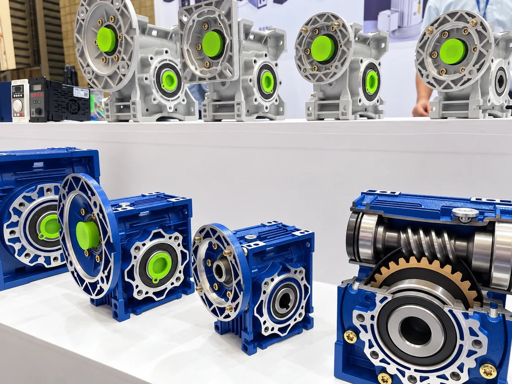

Lubrication has a direct effect on efficiency, temperature, tooth wear, bearing life and oil-seal reliability. Use the gearbox nameplate, model-specific manual and mounting position as the primary references before filling or changing oil.
1. Choose the Correct ISO VG Viscosity
Industrial gear-oil viscosity is commonly stated as an ISO VG grade. ISO VG 220, 320 and 460 are frequently encountered in worm-drive applications, but they are not interchangeable recommendations.
| Viscosity grade | General selection tendency | Important limitation |
|---|---|---|
| ISO VG 220 | Relatively higher speeds, lighter loads or cooler starts | May be too thin for a slow, heavily loaded unit |
| ISO VG 320 | Common middle range for many industrial worm drives | Not a universal NMRV default |
| ISO VG 460 | Lower speeds, higher loads or applications needing a thicker film | Can increase churning loss and cold-start resistance |
High viscosity can strengthen the lubricating film, but oil that is too thick increases drag and heat. Oil that is too thin may not maintain sufficient film thickness at the tooth and bearing contacts. If abnormal heat is already present, use the worm gearbox overheating checklist instead of changing viscosity by guesswork.
2. Confirm Bronze and Copper-Alloy Compatibility
Many NMRV worm gear reducers use a hardened steel worm running against a bronze worm wheel. The oil and its extreme-pressure additive package must therefore be approved for yellow metals or copper alloys.
An unsuitable additive chemistry may stain or attack bronze and can contribute to accelerated wear. Check the lubricant product data sheet for copper-corrosion performance and explicit suitability for worm gearing. For a closer look at component materials, see our worm and worm-wheel materials guide.
3. Synthetic Oil or Mineral Oil?
Worm drives have substantial sliding contact, so a suitable synthetic lubricant is often selected for efficiency, thermal stability and service life. PAO and PAG are both synthetic base-oil families, but their friction behavior, seal compatibility and miscibility are different.
- PAO: generally compatible with many mineral-oil systems, subject to the additive package and seal material.
- PAG: can provide favorable friction behavior in some worm drives, but it is normally not miscible with mineral oil or PAO.
- Mineral oil: may be specified for some models and operating conditions, often with a different drain interval.
Do not mix different base-oil types unless compatibility is confirmed in writing. When changing chemistry, follow the lubricant supplier's flushing procedure and verify seal and coating compatibility.
4. Use the Correct Oil Level and Mounting Position
More oil does not mean better lubrication. Overfilling increases churning losses and temperature and may push oil through the breather or shaft seals. Underfilling can starve the gear mesh and bearings.
The correct quantity and plug arrangement depend on the mounting position. B3, B6, B7, B8, V5 and V6 orientations may place the breather, level and drain plugs in different locations. If leakage appears after filling, check the common worm gearbox oil-leak causes before replacing seals.
5. Check the Complete Operating Condition
Before confirming lubricant, record:
- Gearbox model and size
- Mounting position
- Input speed and actual load torque
- Operating hours, starts per hour and duty cycle
- Minimum and maximum ambient temperature
- Existing oil brand, product name and base-oil type
- Food-grade, washdown or other special requirements
These details are especially important when selecting a gearbox for continuous conveyor duty. The conveyor gearbox application guide explains how load, starts and service factor affect the drive selection.
Can I Use Automotive Gear Oil?
Do not select oil only because an automotive product has a familiar SAE viscosity or GL classification. Industrial ISO VG grades and automotive SAE grades use different classification systems, and some automotive extreme-pressure packages may not be appropriate for bronze components. Use a product specifically approved for the gearbox and worm-wheel material.
Conclusion
Choose worm gearbox oil by combining four checks: correct viscosity, bronze-compatible additive chemistry, suitable base-oil type and correct oil level. Then verify the selection against the exact SMK model, mounting position and operating conditions.